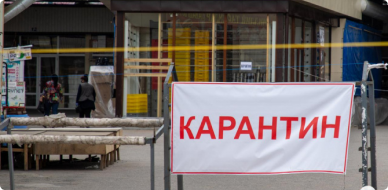

NAMANGANLIKLAR-24
Шавкат Мирзиёев строго предупредил хокимов всех уровней
 11:31 / 15.05.2020
11:31 / 15.05.2020

19 мая состоялось видеоселекторное совещание, посвященное дополнительным мерам поддержки предпринимательства.
По данным пресс-службы главы государства, из-за пандемии в Узбекистане число бедных и безработных увеличится, а доходы семей уменьшатся. На совещании обсуждены дополнительные меры и приоритетные задачи в этом направлении.
Прежде всего, серьезное внимание уделено обеспечению гарантий прав предпринимателей и неприкосновенности их имущества.
«Предупреждаю всех хокимов. Если имущество хоть одного предпринимателя будет изъято незаконно, хоким одной лишь отставкой не отделается, но и ответит перед законом», - подчеркнул Шавкат Мирзиёев.
Компетентным ведомствам даны указания усилить ответственность за нарушение неприкосновенности собственности, обеспечить полноценное исполнение решений суда о компенсации имущества предпринимателей.
Согласно поручению президента деловая активность в каждом районе и городе будет анализироваться на ежемесячной основе.
Бизнес-омбудсман будет вносить правительству информацию о хокимах районов и городов, которые допускают нарушения прав и неприкосновенности собственности предпринимателей.
Кабинетом Министров будет рассматриваться вопрос о соответствии должности хокимов городов и районов, которые не решают проблемы предпринимателей и не работают с ними в достаточной мере.
Cамые популярные новости
По факту прорыва Сардобинского водохранилища возбуждено уголовное дело
11:31 / 15.05.2020
По факту прорыва Сардобинского водохранилища возбуждено уголовное дело
11:31 / 15.05.2020
По факту прорыва Сардобинского водохранилища возбуждено уголовное дело
11:31 / 15.05.2020
По факту прорыва Сардобинского водохранилища возбуждено уголовное дело
11:31 / 15.05.2020

Новости по теме
-

Мирзиёев рассказал, зачем было построено Сардобинское водохранилище
05:28 / 16.05.2020
-

Карантин в Узбекистане продлен до 1 июня
05:28 / 16.05.2020
-

Обмелевшая Сардоба: стихия или человеческий фактор?
05:28 / 16.05.2020